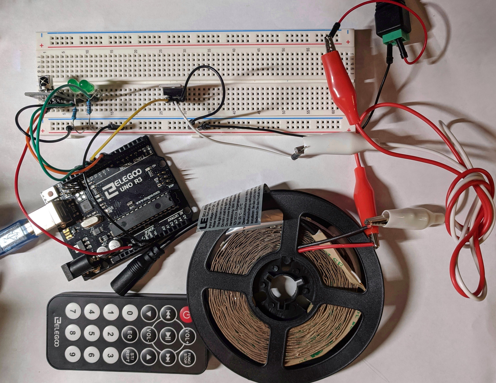

Amanda's Assignment 4!
Here is all the documentation for assignment 4!

This is the Arduino circuit consisting of two green LEDs, a infared system (remote & sensor),
a transistor, and a 300 LEDs long light strip.

This is the circuit in action. The light strip is controlled by the remote. Pressing 0 turns the
light strip off, pressing 1 turns the light on, pressing 2 turns the light strip brighter. The
green LEDs symbolize the state of the light strip. With both off representing the off state, one
on representing the "dimmer" state, and two representing the brighter state.
These are the schematic and calculations.
Crucial Points:
1. LEDs: 5 volts are expected as the input and current is expected to be 20 mA. Thus, 220 ohms resistors
were chosen for the green LEDs, since they were the closest to 160 ohms.
2. Before light strip: 12 volts of power is expected as the input.
3. After light strip: I was unable to find a data sheet, but based on similar products and observing its
physical layout, it appears to consist of 100 parallel columns consisting of three 2385 type LEDs and a
181 ohms resistor. Based on research, it appears that 2385 LEDs have a typical voltage drop of 3.2V.
Using this number, I deducted, for each column, the voltage drop will be around 9.6 V. Using this
information, I could then caculate the estimated current for the whole light strip: around 1.3 Amps.
Current Justification:
Based on the data sheet and per lecture, the maximum current for the transistor is 32 Amps. Based on
my previous calculations, the current flow through the light strip will be around 1.3 Amps, which is way
lower than the transistor's maximum current of 32 Amps, therefore, my current is justified.
// imports the IR remote library
#include
// constant for the infared receiver connected to pin 7
const int IR_PIN = 7;
// creates the receiver object called irvalue
IRrecv irvalue(IR_PIN);
// creates a variable to store the receiver results
decode_results results;
// analog pin for LED strip
int lightStripPin = 9;
// pin for first green LED
int ledPinOne = 10;
// pin for second green LED
int ledPinTwo = 11;
// function called when file starts
void setup() {
// initates Serial Monitor at 9600 baud (for trouble shooting)
Serial.begin(9600);
// begins the receviing process
irvalue.enableIRIn();
// enables LED blinking when receving
// (for trouble shooting)
irvalue.blink13(true);
// initiates light strip pin as output
pinMode(lightStripPin, OUTPUT);
// initiates first green LED as output
pinMode(ledPinOne, OUTPUT);
// initiates second green LED as output
pinMode(ledPinTwo, OUTPUT);
}
// function executed after setup; repeatedly
void loop() {
// executes if IR code is received (returns true) and code will be stored
// in results; otherwise, will return false
// use of switch (case) was inspired by
// http://www.circuitbasics.com/arduino-ir-remote-receiver-tutorial/
if (irvalue.decode(&results)){
// prints the IR code as HEX
// (for trouble shooting)
Serial.println(results.value, HEX);
// turns strip on (bright) and green LEDs
// on if HEX for button "2" is received
switch(results.value){
// HEX for button "2"
case 0xFF18E7:
// changes light strip duty cycle to 100
// (ie. bright)
analogWrite(lightStripPin, 100);
// turns the first green LED on
digitalWrite(ledPinOne, HIGH);
// turns the second green LED on
digitalWrite(ledPinTwo, HIGH);
// ends/exits current case
break;
}
// turns strip on (dimmer) and first green LED
// on if HEX for button "1" is received
switch(results.value){
// HEX for button "1"
case 0xFF30CF:
// changes light strip duty cycle to 20
// (ie. dim)
analogWrite(lightStripPin, 20);
// turns first green LED on
digitalWrite(ledPinOne, HIGH);
// turns second green LED off
digitalWrite(ledPinTwo, LOW);
// ends/exits current case
break;
}
// turns strip off and first green LEDs off
// if HEX for button "0" is received
switch(results.value){
// HEX for button "0"
case 0xFF6897:
// turns light strip off
analogWrite(lightStripPin, 0);
// turns first green LED off
digitalWrite(ledPinOne, LOW);
// turns second green LED off
digitalWrite(ledPinTwo, LOW);
// ends/exits current case
break;
}
// resets the receiver in preparation for
// receiving another code
irvalue.resume();
}
}
This is the code snippet